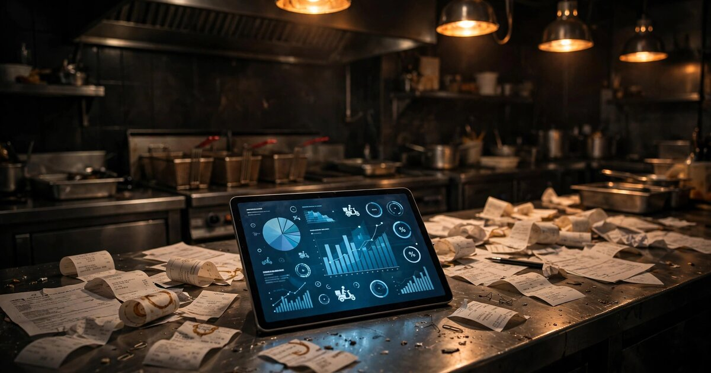

DoorDash Charges Restaurants Billions in Commissions. Nobody's Checking the Math.
American restaurants paid $20-30 billion in delivery commissions last year. A startup called Voosh has proven that recovering even a fraction of billing errors is a viable business. But Voosh only handles the errors operators already know about. The bigger prize is the ones they don't.

The Problem
Every Monday morning, Kory Lau opens his restaurant in Morrow, Georgia, and spends two hours fighting with DoorDash, Uber Eats, and Grubhub. He's not arguing about food quality. He's contesting chargebacks from delivery drivers who marked orders as picked up, then drove off with the food. The platforms refunded the angry customers automatically and deducted the cost from Lau's account. He told Restaurant Business Online that it happens two or three times a night. He gets his money back about 60% of the time. The other 40% just disappears.
Lau's experience is typical. According to Priyam Saraswat, CEO of Voosh, 2.5% to 3% of operators' total delivery revenue is caught up in disputes with their delivery providers. For an industry with profit margins between 5% and 15% (OysterLink, 2026), that slice of revenue is about 20% of delivery profits. One in five profit dollars from delivery vanishes into billing disputes that most operators never file because the process takes hours and recovers pennies.
But chargebacks and refund deductions are just the tip. Beneath them sits a problem most restaurant operators don't even know they have: systematic commission mischarges that nobody is verifying.
DoorDash's three partnership tiers charge approximately 15%, 25%, or 30% (Plott Data, 2026). On top of that: payment processing fees (~2.9%), marketing/promotional fees (1-5%), and tablet rental ($6-10/month). Uber Eats has a comparable structure. Nobody is checking whether the charges applied to each order actually match the contracted tier. Nobody is verifying that promotional credits were applied correctly. Nobody is auditing whether the payment processing fee is 2.9% or has quietly crept to 3.5%. And in the 15+ U.S. cities with delivery fee caps, nobody is systematically checking that platforms comply with local law. A Manhattan bakery's lawsuit alleged platforms were inflating credit-card processing fees to as high as 4.5%.
The total commission pool is enormous. DoorDash alone had 500,000+ restaurant partners and processed 903 million orders in 2025, generating $13.71 billion in revenue (Reuters, July 2026). Uber Eats holds ~23-25% of the U.S. market with ~375,000 partners. Grubhub, acquired by Wonder Group for $650 million in January 2025, retains about 8% with ~250,000 partners (ShiftTracker, 2026). Blended across all platforms, U.S. restaurants are paying roughly $20-30 billion in annual delivery commissions, based on estimated platform-to-consumer GMV of $100-120 billion (derived from DoorDash's disclosed $66B+ GMV at 67% market share) at average commission rates of 20-25%.
The Buried Lede: What Restaurants Aren't Even Looking For
Voosh's reported 2.5-3% dispute rate measures chargebacks and refund deductions. These are the errors that operators notice, fight about, and sometimes recover. But they are structurally different from another category of overcharge: rate-tier misapplication, fee cap violations, payment processing fee inflation, and missing promotional credits.
An illustrative parallel: the freight audit industry. Trucking companies bill shippers using complex rate tables (base rate + fuel surcharge + accessorial fees + detention charges). Cass Information Systems, the market leader, processes over $38 billion in annual freight payments and has been finding and recovering billing errors since the 1960s. The industry-wide finding: companies implementing freight audit software typically recover 2% to 4% of their total annual freight spend through automated detection of billing errors, duplicate invoices, and unauthorized surcharges (Dataintelo, 2025). The freight audit and payment market reached $6.8 billion in 2025 (Dataintelo).
If we apply a similar recovery rate to restaurant delivery commissions, the math changes from Voosh's current scope:
| Category | Conservative | Mid-Range | Aggressive |
|---|---|---|---|
| Total U.S. restaurant delivery commissions (annual) | $20B | $25B | $30B |
| Recoverable overcharge rate (freight benchmark) | 2% | 3% | 4% |
| Total recoverable overcharges | $400M | $750M | $1.2B |
| Already surfaced via disputes (Voosh category) | $250M | $375M | $450M |
| Unsurfaced overcharges (new opportunity) | $150M | $375M | $750M |
The unsurfaced overcharges that restaurants don't even know about range from $150 million to $750 million annually. This is the gap between reactive dispute management (what Voosh does) and proactive commission auditing (what nobody does). The same gap Cass identified in freight billing sixty years ago.
Important caveat: We are applying freight industry error rates to restaurant delivery without direct evidence that the rates transfer. Freight billing involves 15-20 distinct charge components per shipment; delivery commissions have 3-4. The simpler fee structure may mean fewer errors. We will not know the actual overcharge rate until someone builds the audit tool, deploys it across thousands of restaurants, and measures what it finds. If the unsurfaced rate is 0.5% instead of 2-4%, this is a product feature, not a company.
Who's in the Market
| Company | What They Do | Scale | What's Missing |
|---|---|---|---|
| Voosh | Reactive dispute manager. Helps restaurants contest chargebacks, missing item refunds, and cancellation deductions across DoorDash, Uber Eats, and Grubhub through a centralized dashboard. | ~$3.6M estimated annual revenue, 31 employees (Growjo) | Recovers disputed charges reactively. Does not perform systematic commission rate auditing, fee cap compliance verification, or payment processing fee validation. Catches errors restaurants already know about. Does not catch the ones they don't. |
| Deliverect | Order management and aggregation. Connects POS to delivery platforms. Centralizes menus, routing, and analytics. | $100M+ in venture funding (Series D, 2022) | Order routing company, not a financial audit company. Has the data connections to enable commission auditing but has not built that product. |
| Otter (Cloudkitchens) | Order aggregation and analytics for delivery-heavy restaurants. Dashboard shows performance metrics across platforms. | Part of Cloudkitchens ($850M in venture funding) | Aggregates order data and performance analytics but does not audit commission charges or contest billing errors. |
| Toast, Square, Clover | Integrated POS systems that connect to delivery platforms. Report on delivery order volume and revenue. | Toast: $4.9B total company revenue FY2025 (all products, not delivery-specific) | POS companies show what you sold through delivery. They do not show whether the commissions charged on those sales were correct. |
Every company in the restaurant delivery tech stack touches the data needed for commission auditing. None of them audit commissions. Deliverect routes orders. Toast records sales. Voosh contests disputes after the fact. Nobody pulls the billing data, matches it line-by-line against contracted rates, and tells the operator: "You were charged 27.3% on 847 orders last month. Your contract says 25%. You overpaid $3,291."
The Solution
A SaaS platform connecting to DoorDash, Uber Eats, and Grubhub via their merchant APIs, performing continuous automated commission auditing across five layers:
Commission Rate Verification. Every order's commission is matched against the restaurant's contracted partnership tier. A restaurant on DoorDash's Plus plan (25%) charged 30% on a subset of orders gets the discrepancy flagged and disputed automatically.
Fee Cap Compliance. In the 15+ U.S. cities with delivery fee caps (NYC: 20%, LA: 15%, Portland: 10%, SF: 15%), total commission charges per order are validated against the applicable local ordinance. Where Bloomberg Law noted the audit risk for platforms parallels the hotel/travel tax disputes of the 2010s.
Payment Processing Fee Audit. Credit card processing fees are verified against market rates and contractual terms. A restaurant being charged 3.8% "processing" when standard interchange-plus pricing would yield 2.6-2.9% has the spread identified.
Promotional Credit Verification. When platforms offer promotional rates, fee waivers, or marketing credits, the system verifies those credits were actually applied to qualifying orders. Grubhub's pandemic-era promise to "suspend $100 million in commissions" (later clarified as deferred, not dropped) showed that promotional credit tracking is a persistent source of confusion.
Chargeback and Refund Fraud Detection. This is Voosh's current product, done more broadly: pattern detection on customer refund claims (same customer requesting refunds across multiple restaurants), delivery driver pickup fraud, and platform-initiated refunds where the restaurant was not at fault.
Revenue Model
The pricing is hybrid: a low monthly subscription provides the dashboard and analytics, while a contingency fee on recovered overcharges creates a risk-free entry point.
What this looks like for a single restaurant: A restaurant doing $10,000/month in delivery revenue at a 25% commission rate pays $2,500/month in commissions. If the audit platform recovers 3% of that ($75/month), the contingency fee at 25% is $18.75. Add the $79/month subscription, and the restaurant pays $97.75 total, gets back $56.25 net, plus visibility into its delivery financials it never had. The value proposition is positive as long as the audit finds anything at all.
| Revenue Stream | Pricing | Year 3 Target | Annual Revenue |
|---|---|---|---|
| SaaS subscription (per-location, per-month) | $79/mo (single), $149/mo (multi) | 3,000 locations | $3.2M |
| Recovery contingency fee | 25% of recovered amount | $8M in total recoveries | $2.0M |
| Fee cap compliance module (premium) | $49/mo per location | 800 locations in fee-cap cities | $470K |
| Enterprise analytics for chains | $500-2,000/mo per brand | 25 chains (10-50 locations) | $375K |
| Total Year 3 | ~$6.0M |
Reaching 3,000 locations by Year 3 means penetrating 0.4-0.6% of the ~600,000 unique U.S. restaurants on delivery platforms. Not trivial, but Voosh reaching $3.6M revenue suggests the buyer exists.
Startup Costs
| Category | Cost | Notes |
|---|---|---|
| Engineering team (Year 1) | $600,000 | 3 engineers: platform API integrations, audit rule engine and anomaly detection, frontend dashboard. Founding CTO handles architecture. |
| Platform API access and compliance | $50,000 | Developer program fees, rate limit management, legal review. DoorDash's and UberEats' merchant APIs require approval and partnership agreements. |
| Fee cap ordinance database | $30,000 | Legal research to build and maintain a database of 15+ city/county delivery fee cap ordinances. Requires ongoing monitoring. |
| Sales and customer success | $250,000 | 2 people: one outbound (targeting multi-location operators), one onboarding/success. Restaurant operators are not early SaaS adopters; this requires consultative selling. |
| Infrastructure and SOC 2 | $40,000 | Cloud hosting, SOC 2 Type I readiness (required by multi-location operators handling financial data), encryption. |
| Working capital | $80,000 | Contingency-based revenue creates cash flow gaps: you recover money, invoice your 25% share, wait 30-60 days for payment. |
| Total Year 1 | $1.05M | Seed stage. Narrow product surface: API connections, rule engine, dashboard. |
Why Now
Scale has arrived. DoorDash processed 903 million orders in 2025. At that volume, even small per-order commission errors aggregate fast. A 0.5% overcharge across 903 million orders at $35 average order value is $158 million.
Fee caps keep spreading. NYC made its cap permanent. LA extended its. San Francisco, Portland, Chicago, and DC have followed. The FTC proposed a federal rule in 2025 addressing "potentially deceptive and misleading" delivery pricing. Each new cap creates a new compliance verification requirement.
Margin pressure is existential. Forty-two percent of restaurant operators reported they were not profitable in 2025 (NRA, via Franchise Times). Menu prices already rose 3.9% year-over-year. Operators are out of pricing power. Commission recovery is one of the few remaining levers.
Platform APIs have matured. DoorDash's Merchant API, Uber Eats' Restaurant API, and Grubhub's Partner API all provide programmatic access to order-level data, including commission breakdowns. These APIs were severely limited before 2022.
Risks and Challenges
Platform API dependency is existential. The entire product relies on continued API access. Platforms have incentive to maintain merchant data access (it reduces support costs), but they also have the power to throttle, restrict, or revoke access if they decide commission auditing is adversarial. Worse, platforms could retaliate against restaurants using audit tools through algorithmic deprioritization, reduced marketing placement, or contract renegotiation pressure. This is not hypothetical: restaurants report that declining paid promotions on DoorDash leads to reduced organic visibility. An audit tool that publicly embarrasses platform billing practices could trigger a disproportionate response.
Mitigation strategy: Position the product as a merchant health tool that improves operator retention on the platform, not as an adversarial audit. Platforms lose merchants when margins go negative. Build relationships with platform partner teams. But be honest: if DoorDash decides to revoke API access, there is no technical workaround that doesn't involve scraping, which violates terms of service. This risk cannot be fully mitigated.
Small average deal size. At $79-167/month per location, customer acquisition cost must be very low. A restaurant doing $5,000/month in delivery revenue is paying ~$1,250 in commissions. A 3% recovery yields $37.50/month, making the total cost ($97.75) barely net-positive ($28.12/month net). The unit economics only work for restaurants doing $10,000+ in monthly delivery volume, which narrows the addressable market to perhaps 200,000-300,000 locations. Outbound sales must focus on multi-location operators where the per-location revenue multiplies across 10-100 locations.
Low switching costs. If Voosh adds proactive auditing, or if Deliverect or Toast builds it into existing platforms, a standalone commission audit SaaS has limited defensibility. The moat is the audit rule engine (accumulated rate structures, fee cap ordinances, billing anomaly patterns) and the recovery track record. These are real but thin moats.
Limitations
The freight audit benchmark (2-4% recovery rate) may not transfer to restaurant delivery. A long-haul shipment has 15-20 distinct charge components, each with its own rate table. A delivery order has 3-4 components. Simpler billing may mean fewer errors, making the unsurfaced overcharge pool smaller than projected. Our $150-750M estimate is a 5x range for a reason: the low end is more likely given the simpler fee structures, and the high end requires that delivery platforms bill with error rates comparable to freight carriers. We lean toward the conservative end.
The Year 3 revenue target of $6 million includes no cost-side projections. Customer acquisition costs, churn rates, engineering headcount growth, and support scaling are all unmodeled. For an article advocating analytical rigor, this is an intentional scope limitation, not an oversight: the cost structure depends on distribution strategy (direct sales vs. POS partnerships vs. marketplace integrations) and we lack the data to model all three paths credibly.
We also do not know whether delivery platform merchant APIs currently expose sufficient granularity for order-level commission auditing. DoorDash's and Uber Eats' APIs provide order data, but the level of commission detail available programmatically versus what's visible in the merchant dashboard may differ. API capability is a build-time discovery, not a desk-research question.
Strongest Counterargument
Delivery platforms will fix their own billing errors before a third-party auditor can build a business around them. DoorDash, Uber, and Grubhub all have internal finance teams, regulatory compliance departments, and engineering capacity to build internal audit tools and proactively credit merchants for overcharges. A third-party SaaS is arbitraging a temporary information asymmetry that the platforms will close.
This has precedent. Amazon spent years being sued by marketplace sellers over fee calculation errors before building internal tools that surface and auto-correct mischarges. Hotel OTA commission disputes were eventually addressed through standardized booking systems.
The counter: freight carriers have had every incentive and engineering capacity to bill correctly for sixty years. Cass Information Systems still processes $38 billion in annual freight payments and still finds 2-4% in recoverable overcharges. Billing errors persist not because carriers are malicious but because combinatorial complexity at scale guarantees errors. Restaurant delivery has simpler per-order billing but far higher volume (903 million orders on one platform alone). The question is not whether errors exist but whether platforms will proactively find them and refund money. Based on sixty years of freight industry evidence: platforms fix errors when caught. They do not proactively search for overcharges and refund them.
What You Can Do
If you run a restaurant doing $5,000+/month in delivery: Pull your monthly commission statements from every platform. Calculate your effective commission rate (total commissions ÷ total delivery revenue) and compare it to your contracted tier. If you're on DoorDash Plus (25%) and your effective rate is 27-28%, you have rate variance worth investigating. Check whether you're in a fee cap city and whether your total fees exceed the cap. This takes 30 minutes once a month and can surface hundreds of dollars in overcharges without any software.
If you run 10+ locations: Your aggregate delivery spend is large enough that automated auditing pays for itself immediately. You're also the segment that the standalone tool described here would target first, because your multi-platform, multi-location billing complexity is where the biggest variances hide. In the interim, assign someone to reconcile platform statements against contracted rates across all locations quarterly. This is the validation exercise that would prove or disprove the business case: if systematic rate variance doesn't appear in multi-location data, the startup premise weakens considerably.
If you're a founder considering building this: Start with DoorDash (67% market share). Build the API integration, deploy to 50 multi-location operators, and measure the actual commission variance rate. If it's above 1.5%, you have a business. If it's below 0.5%, you have a feature to sell to Toast or Deliverect. The fee cap compliance module is a strong wedge for NYC and LA specifically, where caps are permanent and penalties include $1,000/day fines per restaurant. Lead with compliance, expand into full audit.
The Bottom Line
Restaurants are paying $20-30 billion a year in delivery commissions with no systematic way to verify the charges are correct. Voosh has proven that operators will pay for delivery financial management tools, but its reactive dispute recovery only addresses errors restaurants already notice. The larger pool of unsurfaced overcharges, including rate-tier misapplication, fee cap violations, and payment processing inflation, sits unaudited. The freight audit industry built a $6.8 billion market by closing exactly this kind of gap for shippers. Whether the same model works for restaurants depends on a single empirical question: how often are delivery platforms charging more than they should? If the answer is 2-4%, this is a $200M+ standalone market. If it's 0.5%, it's a feature inside someone else's product. The startup cost is $1.05M. The only way to find out is to build the tool, connect to the APIs, and measure.